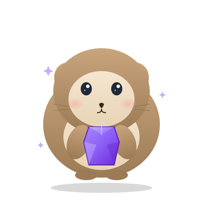

Declarative DSL. Compile-time param validation.
OpenAPI 3.1. 50% faster than Go single-threaded.

Why Pika
Pika brings Grape's ergonomics to Crystal's type system — every DSL construct resolves to typed, validated, documented code at compile time.
Resource-based routing with resource, namespace, route_param, and mount. If you know Grape, you know Pika.
Param blocks generate typed structs — declared_params.name is a String, guaranteed. Coerces UUID, Time, Array(T) and nested Pika.object structs; misspell a field and the compiler tells you before a 3am page.
Full spec generated from your DSL — no annotation layers. returns 201, UserEntity documents typed responses with real $ref schemas; validation and raised errors surface automatically.
Add docs at: "/docs" and get an interactive explorer with live request testing. No separate server, no build step.
RFC 7807 Problem Details by default. Swap to Grape-compatible or JSON:API format with a single macro. Custom formatters via a clean interface.
144k req/s single-threaded — 50% faster than Go's chi router (matched GOMAXPROCS=1), 12× faster than Grape. Pika owns its router on Crystal's stdlib HTTP::Server with no external HTTP dependency.
Opt in with formats :json, :xml, :msgpack — handlers keep returning JSON and Pika transcodes to XML or MessagePack per the request's Accept header. Both encoders are hand-rolled, so it stays zero-dependency.
New in v0.9
v0.9 makes the response half of the request lifecycle first-class and adds the operational features a team needs before shipping a REST API to production.
Set the status and headers from any handler — status 201, header "Location", .... Sensible verb defaults: an empty delete becomes 204 No Content.
MyAPI.request(:post, "/users", json: {...}) drives the full middleware/handler chain and returns a structured response — no socket, no port. Assertions stay fast.
JSON, x-www-form-urlencoded, and multipart/form-data all decode into the same typed declared_params. Declare a field as Pika::UploadedFile and you're done.
One cors macro — origin allow-list (or wildcard), methods, headers, credentials. Preflight OPTIONS requests are answered automatically by the router.
Opt-in structured access logging, a per-request X-Request-Id generated and propagated, and an instrument hook for metrics and tracing.
On SIGTERM/SIGINT the server stops accepting connections, drains in-flight requests within a configurable timeout, then closes — safe to roll under Kubernetes or ECS.
Type Safety
Crystal's compiler is your first line of defence. Every param access is checked at compile time — typos, wrong types, missing fields never make it to production.
# A typo in params hash access
get :users do
page = params[:pge] # typo — returns nil
limit = params[:limt] # typo — returns nil
User.page(page).per(limit)
end
⚠ NoMethodError: undefined method `page'
for nil:NilClass ← discovered in production# The same typo in Pika
get :users do
page = declared_params.pge # typo
limit = declared_params.limt # typo
User.page(page).per(limit)
end
✓ Error: undefined method 'pge'
for Params ← caught before binary compilesThe DSL
Write APIs the way you think about them. Resources, versioning, param validation, hooks — all in one declarative block.
require "pika"
class MyAPI < Pika::API
info title: "My API", version: "1.0.0"
version "v1"
docs at: "/docs"
before do |env|
token = env.request.headers["Authorization"]?
raise Pika::UnauthorizedError.new unless token
end
resource :users do
desc "List all users"
params do
optional page : Int32 = 1
optional per_page : Int32 = 25
end
get do
{users: User.all, page: declared_params.page}.to_json
end
desc "Create a user"
params do
requires name : String, regexp: /\A\w+\z/
requires email : String
optional role : String = "member",
values: %w[member admin]
end
post do
{created: true, name: declared_params.name}.to_json
end
route_param :id do
desc "Get a user"
get do
{id: declared_params.id}.to_json
end
end
end
end
MyAPI.run # → 0.0.0.0:3000OpenAPI 3.1
Add docs at: "/docs" and Pika mounts a live Scalar explorer alongside your API — no build step, no separate config. The spec is generated entirely from your DSL.
This is the real Scalar UI — click any endpoint to expand it. Full OpenAPI docs →
Performance
Matched pairs: Pika 1 thread vs Go GOMAXPROCS=1; Pika 4 threads (preview_mt) vs Go GOMAXPROCS=4. Same machine (bombardier -c 128 -d 15s, Apple M-series), zero non-2xx responses.
| Endpoint | Pika (Crystal) | Go (chi) | Ruby (Grape) | vs Grape |
|---|---|---|---|---|
| 1 thread · GOMAXPROCS=1 | ||||
| Static text | 144,712 | 96,350 | 12,082 | 12× faster |
| JSON response | 129,701 | 83,131 | 11,701 | 11× faster |
| POST + param validation | 125,210 | 71,998 | 8,487 | 15× faster |
| 4 threads · GOMAXPROCS=4 · Crystal preview_mt is experimental | ||||
| Static text | 124,812 | 110,868 | — | — |
| JSON response | 77,749 | 102,863 | — | Go leads |
| POST + param validation | 73,131 | 88,115 | — | Go leads |
req/sec · bombardier -c 128 -d 15s · Apple M-series · Ruby: Grape 3.2.1 + Puma, Ruby 3.3.5 (MRI arm64-darwin)
Ecosystem
Pika's core stays lean and ORM-agnostic. Companion shards extend it for databases and authentication — each versioned and released independently.
Bridges Pika with Clear ORM for PostgreSQL. Auto-derives request validation, entity exposure, and OpenAPI schemas from your model column definitions.
params_from User — derive request params from model columnsexpose_clear_model — generate entity exposure from schemapaginate — pagination with data + meta envelopePluggable authentication strategies with class-level defaults and per-resource overrides. Bearer token, API key, and HTTP Basic out of the box.
auth :bearer do |token| ... end — set class defaultpublic_resource — opt a resource out of auth entirelyresource_auth — override strategy per resourceAdd it to your shard.yml, run shards install, and ship.